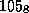
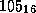
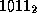

Common Lisp the Language, 2nd Edition


Next: Data Types
Up: Notational Conventions
Previous: The Lisp Reader
Certain characters are used in special ways in the syntax of Common Lisp.
The complete syntax is explained in detail in chapter 22,
but a quick summary here may be useful:
- (
-
A left parenthesis begins a list of items. The list may
contain any number of items, including zero. Lists may be nested.
For example, (cons (car x) (cdr y)) is a list of three things,
of which the last two are themselves lists.
- )
- A right parenthesis ends a list of items.
- '
- An acute accent (also called single
quote or apostrophe) followed by an expression form
is an abbreviation for (quote form). Thus 'foo means
(quote foo) and '(cons 'a 'b) means (quote (cons (quote a) (quote b))).
- ;
- Semicolon is the comment character. It and all
characters up to the end of the line are discarded.
- "
- Double quotes surround character strings:
"This is a thirty-nine-character string."
- \
- Backslash is an escape character.
It causes the next character to be treated as a letter rather than for its usual
syntactic purpose. For example, A\(B denotes a symbol whose
name consists of the three characters A, (, and B. Similarly,
"\"" denotes a character string containing one character, a
double quote, because the first and third double quotes serve to delimit the
string, and the second double quote serves as the contents of the string. The
backslash causes the second double quote to be taken literally and prevents it
from being interpreted as the terminating delimiter of the string.
- |
- Vertical bars are used in pairs
to surround the name (or part of the name) of a symbol that has
many special characters in it. It is roughly equivalent to putting a
backslash in front of every character so surrounded. For example,
|A(B)|, A|(|B|)|, and A\(B\) all mean the symbol whose name
consists of the four characters A, (, B, and ).
- #
- The number sign signals the beginning of a
complicated syntactic structure.
The next character designates the precise syntax to follow.
For example, #o105 means  (105 in octal notation);
#x105 means  (105 in hexadecimal notation);
#b1011 means  (1011 in binary notation);
#\L denotes a character object for the character L; and
#(a b c) denotes a vector of three elements a, b, and c.
A particularly important case is that #'fn means (function fn),
in a manner analogous to 'form meaning (quote form).
- `
- Grave accent (``backquote'') signals that
the next expression is a template that may contain commas. The backquote syntax
represents a program that will construct a data structure
according to the template.
- ,
- Commas are used within the backquote syntax.
- :
- Colon is used to indicate which package a
symbol belongs to. For example, network:reset denotes the symbol named
reset in the package named network. A leading colon indicates a keyword, a symbol that always evaluates to itself.
The colon character is not actually part of the print name
of the symbol.
This is all explained in chapter 11; until you read
that, just keep in mind that a symbol notated with a leading colon
is in effect a constant that evaluates to itself.

Notice of correction.
In the first edition, the characters ``,'' and ``:'' at the
left margin above were inadvertently omitted.

Brackets, braces, question mark, and exclamation point
(that is, [, ], {, },
?, and !) are not used for any purpose in standard Common Lisp syntax.
These characters are explicitly reserved to the user, primarily
for use as macro characters for user-defined lexical syntax extensions
(see section 22.1.3).

All code in this book is written using lowercase letters.
Common Lisp is generally insensitive to the case in which code
is written. Internally, names of symbols are ordinarily
converted to and stored in uppercase form.
There are ways to force case conversion on output if desired;
see *print-case*.
In this book, wherever an interactive exchange between a user
and the Lisp system is shown, the input is exhibited with lowercase
letters and the output with uppercase letters.

X3J13 voted in June 1989 (READ-CASE-SENSITIVITY) to introduce
readtable-case. Certain settings allow the names of symbols
to be case-sensitive. The default behavior, however, is as described
in the previous paragraph. In any event, only uppercase letters
appear in the internal print names of symbols naming the
standard Common Lisp facilities described in this book.
Next: Data Types
Up: Notational Conventions
Previous: The Lisp Reader
AI.Repository@cs.cmu.edu